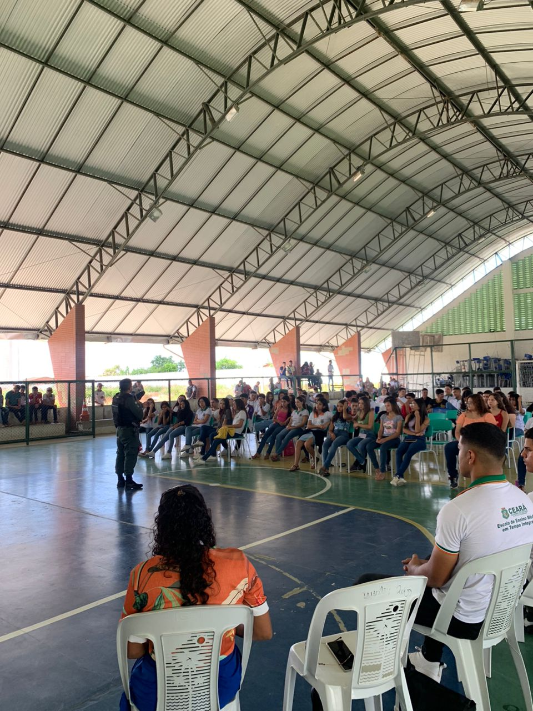
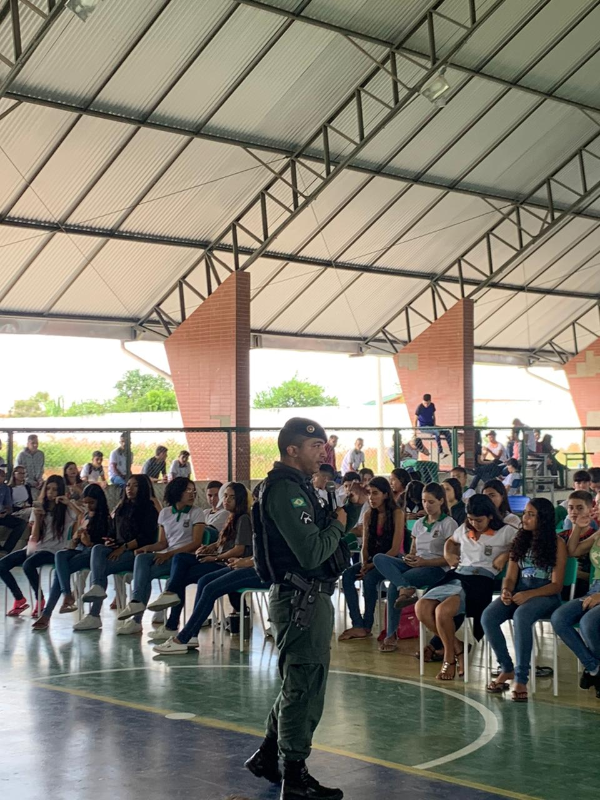
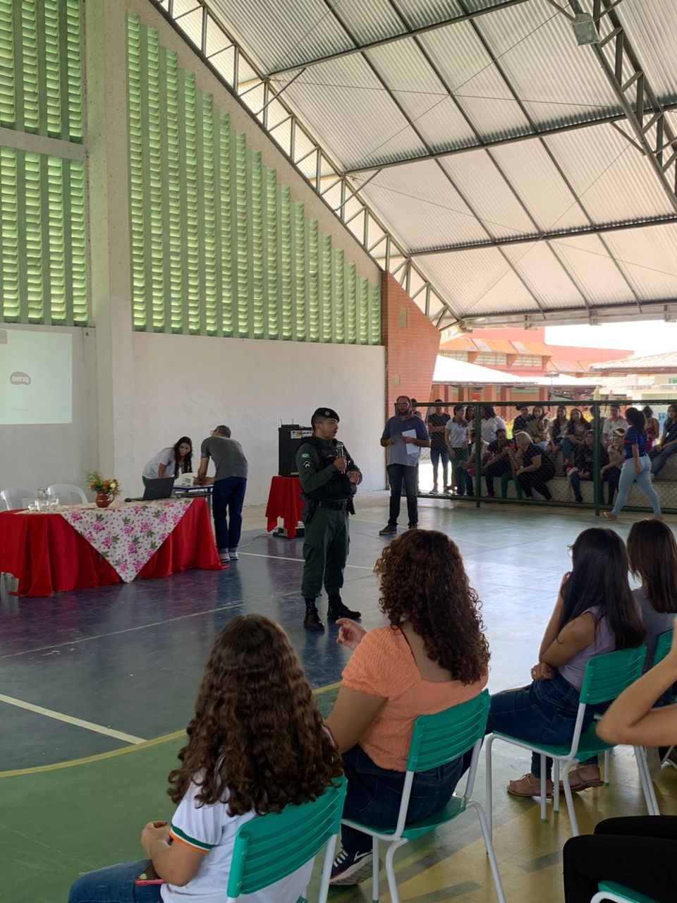
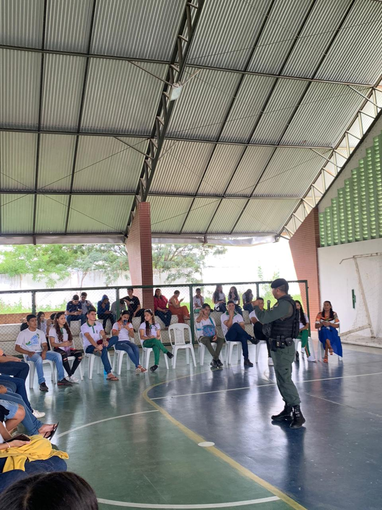
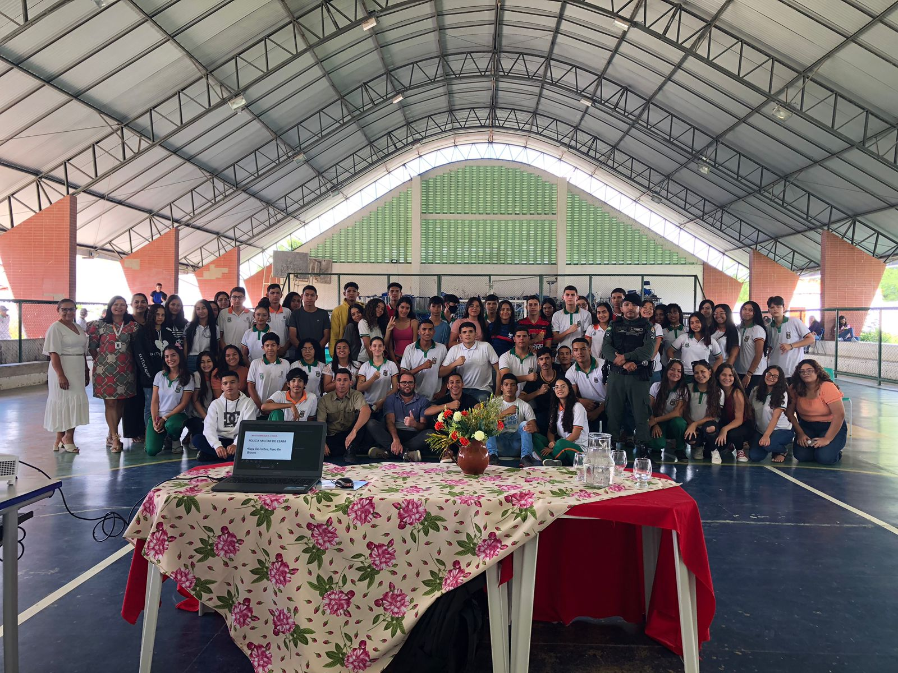

O Governo do Ceará lançou, na manhã desta quinta-feira (13), por meio das secretarias da Segurança Pública e Defesa Social e da Educação, a cartilha de orientações para a prevenção e combate da violência dentro do ambiente escolar. A cartilha foi apresentada durante reunião que contou com representantes da educação e segurança do Estado, do Ministério Público do Ceará (MPCE), da Associação dos Municípios do Estado do Ceará (Aprece), Sindicato das Escolas Particulares e outros órgãos.
Pelas redes sociais o governador do Ceará, que está em viagem a China, se pronunciou sobre a situação. “Reforço que nossas equipes das secretarias da Segurança e da Educação têm trabalhado em conjunto para identificar possíveis situações suspeitas de violência, inclusive perfis em redes sociais”, destacou o chefe do Executivo.Empenhado em combater o pânico e ser efetivo na prevenção da violência no contexto escolar, o governo estadual divulgou a cartilha nas redes sociais. O secretário da Segurança Pública, Samuel Elânio, destacou a importância do documento para orientar a comunidade escolar sobre como agir em uma eventual situação de risco.
“Essa é uma cartilha para que seja difundida entre as escolas, os diretores, os alunos, os pais e todo mundo que está envolvido nesse trabalho e assim a gente conseguir evitar maiores problemas, com uma atuação conjunta de todos”, ressaltou o secretário. “É uma cartilha simplificada orientando como os diretores, os professores, os próprios alunos, devem agir em qualquer situação que ofereça risco”, explicou.
Desde a semana passada, as forças de segurança cearenses têm atuado para combater esse tipo de ação no Estado. “Obviamente, a Polícia Militar tem uma capilaridade muito maior, mas a ideia é em todos os locais próximos de escolas públicas e particulares, haver viaturas atuando e circulando. Considerando o avanço dos trabalhos e das reuniões, iremos apresentar um planejamento em que vai haver um trabalho ostensivo da Polícia Militar, e o Corpo de Bombeiros também vai atuar nessa presença próximo às escolas em que todo o estado do Ceará”, pontuou Samuel Elânio.
A escola de ensino Médio E.E.M.T.I Ana Noronha, realizou uma palestra com alguns agentes da segurança plública do Estado com o tema "paz na escola". Ação promovida pelo o Grêmio da escola e Núcleo Gestor.
    